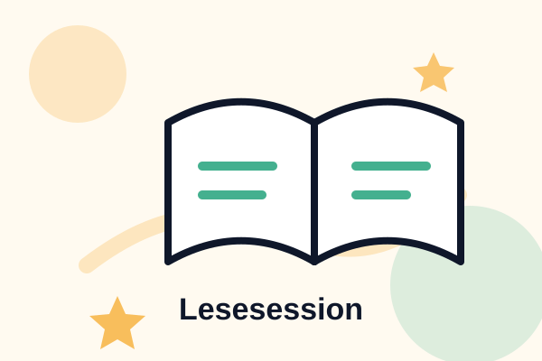

Klarer Einstieg
Jede Einheit beginnt mit einem kurzen Impuls, damit alle Kinder sofort mitmachen können.
Zukunft Orientiertes Lernen
Ein Schüler*innenprojekt für die Gaißau Volksschule: kurze Lesemomente, kreative Workshops und echte Freude an Geschichten.

Aktuelle Session
LiveLesen wird zum Gespräch.
Warum ZOL
ZOL arbeitet nicht wie eine normale Unterrichtsstunde. Das Team bringt Geschichten, Rollen, Bilder und kurze Aufgaben mit, damit Kinder Texte aktiv erleben und eigene Ideen entwickeln.
Jede Einheit beginnt mit einem kurzen Impuls, damit alle Kinder sofort mitmachen können.
Fragen, Rollen und Gespräche helfen, Wörter nicht nur zu lesen, sondern zu benutzen.
Kinder zeichnen, schreiben oder präsentieren am Ende eine eigene Weiterführung.
Kinder erreicht
Besuche geplant
Formate
Prozent Einsatz
So läuft eine Einheit
Klare Schritte, weiche Flächen, präzise Typografie und genug Bewegung, damit die Seite lebendig bleibt.
Das Team startet mit Bild, Frage oder Vorleseimpuls.
Kinder sammeln Figuren, Gefühle, Orte und mögliche Wendungen.
Aus Worten werden Zeichnungen, Mini-Texte, Rollenspiele oder kleine Präsentationen.
Galerie
Stimmen
“Die Kinder sind viel schneller ins Sprechen gekommen, weil die Geschichte nicht nur vorgelesen, sondern gemeinsam gebaut wurde.”
Lehrperson, Gaißau Volksschule“Mir gefällt, dass wir nicht nur zuhören. Wir dürfen auch sagen, was als Nächstes passiert.”
Schülerfeedback“ZOL verbindet Vorbereitung, Ruhe und Energie. Genau diese Mischung brauchen gute Lesemomente.”
Projektteam“Die Einheiten sind klar vorbereitet und trotzdem offen genug, damit jedes Kind einen eigenen Zugang findet.”
Begleitperson“Wenn Kinder nach dem Vorlesen weiterfragen, weiterzeichnen und weiterdenken, ist der wichtigste Schritt geschafft.”
ZOL-Team“Die kurzen Formate passen gut in den Schulalltag und geben dem Lesen trotzdem einen besonderen Moment.”
Feedback aus dem ProjektTermine
Interaktives Geschichtenerzählen mit der 1. und 2. Klasse.
Die Kinder erfinden eigene Figuren und kurze Fortsetzungen.
Ein gemeinsamer Vormittag mit Spielen, Vorlesen und Mini-Präsentationen.
FAQ
ZOL ist ein von Schüler*innen geleitetes Projekt für Leseförderung und interaktives Lernen an der Gaißau Volksschule.
Schüler*innen, die gerne lesen, organisieren und mit Kindern arbeiten, können Teil des Teams werden.
Die Einheiten finden direkt an der Gaißau Volksschule statt, abgestimmt mit den Lehrpersonen.
Kontakt
Schreib dem ZOL-Team, wenn du mitmachen, unterstützen oder mehr über das Projekt wissen möchtest.
{kind=link}
{kind=link}
{kind=link}
{kind=link}
{kind=link}